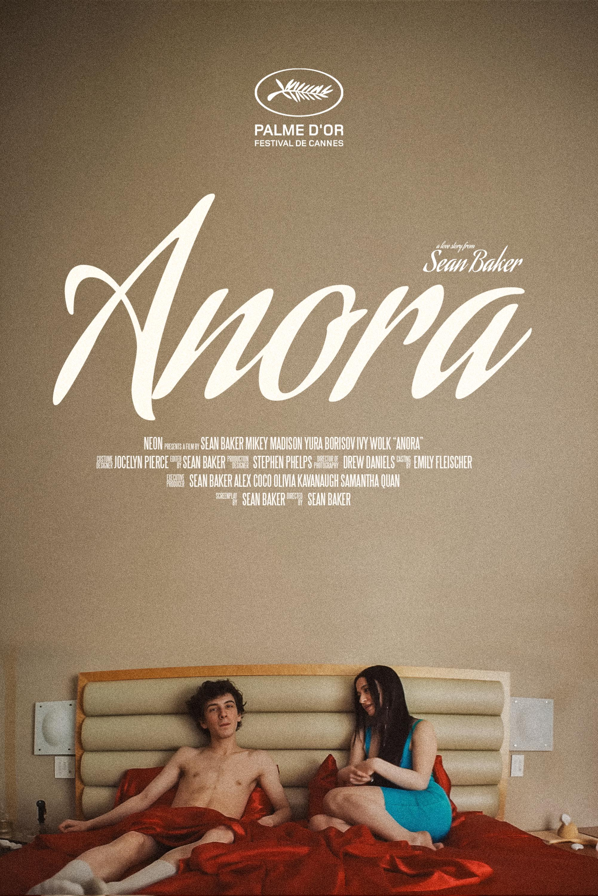

PREMI_OSCAR_2025
Miglior Film
- Anora (Sean Baker)
 The Brutalist (Brady Corbet)
The Brutalist (Brady Corbet) A Complete Unknown (James Mangold)
A Complete Unknown (James Mangold) Conclave (Edward Berger)
Conclave (Edward Berger) Dune: Part Two (Denis Villeneuve)
Dune: Part Two (Denis Villeneuve) Emilia Pérez (Jacques Audiard)
Emilia Pérez (Jacques Audiard) Ainda estou aqui (Walter Salles)
Ainda estou aqui (Walter Salles) Nickel Boys (RaMell Ross)
Nickel Boys (RaMell Ross) The Substance (Coralie Fargeat)
The Substance (Coralie Fargeat) Wicked (Jon M. Chu)
Wicked (Jon M. Chu)
Miglior Regista
 Sean Baker (Anora)
Sean Baker (Anora) Jacques Audiard (Emilia Pérez)
Jacques Audiard (Emilia Pérez) Brady Corbet (The Brutalist)
Brady Corbet (The Brutalist) Coralie Fargeat (The Substance)
Coralie Fargeat (The Substance) James Mangold (A Complete Unknown)
James Mangold (A Complete Unknown)
Miglior Attore Protagonista
 Adrien Brody (The Brutalist)
Adrien Brody (The Brutalist) Timothée Chalamet (A Complete Unknown)
Timothée Chalamet (A Complete Unknown) Colman Domingo (Sing Sing)
Colman Domingo (Sing Sing) Ralph Fiennes (Conclave)
Ralph Fiennes (Conclave) Sebastian Stan (The Apprentice)
Sebastian Stan (The Apprentice)
Miglior Attrice Protagonista
 Mikey Madison (Anora)
Mikey Madison (Anora) Cynthia Erivo (Wicked)
Cynthia Erivo (Wicked) Karla Sofía Gascón (Emilia Pérez)
Karla Sofía Gascón (Emilia Pérez) Demi Moore (The Substance)
Demi Moore (The Substance) Fernanda Torres (Ainda estou aqui)
Fernanda Torres (Ainda estou aqui)
Miglior Attore non Protagonista
 Kieran Culkin (A Real Pain)
Kieran Culkin (A Real Pain) Jurij Borisov (Anora)
Jurij Borisov (Anora) Edward Norton (A Complete Unknown)
Edward Norton (A Complete Unknown) Guy Pearce (The Brutalist)
Guy Pearce (The Brutalist) Jeremy Strong (The Apprentice)
Jeremy Strong (The Apprentice)
Miglior Attrice non Protagonista
 Zoe Saldana (Emilia Pérez)
Zoe Saldana (Emilia Pérez) Monica Barbaro (A Complete Unknown)
Monica Barbaro (A Complete Unknown) Ariana Grande (Wicked)
Ariana Grande (Wicked) Felicity Jones (The Brutalist)
Felicity Jones (The Brutalist) Isabella Rossellini (Conclave)
Isabella Rossellini (Conclave)
Miglior Sceneggiatura non Originale
 Peter Straughan (Conclave)
Peter Straughan (Conclave) Jacques Audiard, Thomas Bidegain, Léa Mysius e Nicolas Livecchi (Emilia Pérez)
Jacques Audiard, Thomas Bidegain, Léa Mysius e Nicolas Livecchi (Emilia Pérez) Greg Kwedar, Clint Bentley, Clarence Maclin e John "Divine G" Whitfield (Sing Sing)
Greg Kwedar, Clint Bentley, Clarence Maclin e John "Divine G" Whitfield (Sing Sing) James Mangold e Jay Cocks (A Complete Unknown)
James Mangold e Jay Cocks (A Complete Unknown) RaMell Ross e Joslyn Barnes (Nickel Boys)
RaMell Ross e Joslyn Barnes (Nickel Boys)
Miglior Sceneggiatura Originale
- Sean Baker (Anora)
 Moritz Binder, Tim Fehlbaum e Alex David (September 5)
Moritz Binder, Tim Fehlbaum e Alex David (September 5) Brady Corbet e Mona Fastvold (The Brutalist)
Brady Corbet e Mona Fastvold (The Brutalist) Jesse Eisenberg (A Real Pain)
Jesse Eisenberg (A Real Pain)- Coralie Fargeat (The Substance)
Miglior Film Internazionale
 Ainda estou aqui (Walter Salles)
Ainda estou aqui (Walter Salles) Straume (Gints Zilbalodis)
Straume (Gints Zilbalodis) Pigen med nålen (Magnus von Horn)
Pigen med nålen (Magnus von Horn) Dāne-ye anjīr-e ma'ābed (Mohammad Rasoulof)
Dāne-ye anjīr-e ma'ābed (Mohammad Rasoulof)- Emilia Pérez (Jacques Audiard)
Miglior Film d'Animazione
- Straume (Gints Zilbalodis)
 The Wild Robot (Chris Sanders)
The Wild Robot (Chris Sanders) Inside Out 2 (Kelsey Mann)
Inside Out 2 (Kelsey Mann) Wallace & Gromit: Vengeance Most Fowl (Nick Park e Merlin Crossingham)
Wallace & Gromit: Vengeance Most Fowl (Nick Park e Merlin Crossingham) Memoir of a Snail (Adam Elliot)
Memoir of a Snail (Adam Elliot)
Miglior Fotografia
 Lol Crawley (The Brutalist)
Lol Crawley (The Brutalist) Jarin Blaschke (Nosferatu)
Jarin Blaschke (Nosferatu) Greig Fraser (Dune: Part Two)
Greig Fraser (Dune: Part Two) Paul Guilhaume (Emilia Pérez)
Paul Guilhaume (Emilia Pérez) Edward Lachman (Maria)
Edward Lachman (Maria)
Miglior Scenografia
 Nathan Crowley e Lee Sandales (Wicked)
Nathan Crowley e Lee Sandales (Wicked) Judy Becker e Patricia Cuccia (The Brutalist)
Judy Becker e Patricia Cuccia (The Brutalist) Suzie Davies e Cynthia Sleiter (Conclave)
Suzie Davies e Cynthia Sleiter (Conclave) Craig Lathrop e Beatrice Brentnerová (Nosferatu)
Craig Lathrop e Beatrice Brentnerová (Nosferatu) Patrice Vermette e Shane Vieau (Dune: Part Two)
Patrice Vermette e Shane Vieau (Dune: Part Two)
Migliori Costumi
 Paul Tazewell (Wicked)
Paul Tazewell (Wicked) Lisy Christl (Conclave)
Lisy Christl (Conclave) Linda Muir (Nosferatu)
Linda Muir (Nosferatu) Arianne Phillips (A Complete Unknown)
Arianne Phillips (A Complete Unknown) Janty Yates e Dave Crossman (Gladiator II)
Janty Yates e Dave Crossman (Gladiator II)
Migliori Trucco e Acconciatura
 Pierre-Olivier Persin, Stéphanie Guillon e Marilyne Scarselli (The Substance)
Pierre-Olivier Persin, Stéphanie Guillon e Marilyne Scarselli (The Substance) Julia Floch Carbonel, Emmanuel Janvier e Jean-Christophe Spadaccini (Emilia Pérez)
Julia Floch Carbonel, Emmanuel Janvier e Jean-Christophe Spadaccini (Emilia Pérez) Frances Hannon, Laura Blount e Sarah Nuth (Wicked)
Frances Hannon, Laura Blount e Sarah Nuth (Wicked) Mike Marino, David Presto e Crystal Jurado (A Different Man)
Mike Marino, David Presto e Crystal Jurado (A Different Man) David White, Traci Loader e Suzanne Stokes-Munton (Nosferatu)
David White, Traci Loader e Suzanne Stokes-Munton (Nosferatu)
Migliori Effetti Visivi
 Paul Lambert, Stephen James, Rhys Salcombe e Gerd Nefzer (Dune: Part Two)
Paul Lambert, Stephen James, Rhys Salcombe e Gerd Nefzer (Dune: Part Two) Eric Barba, Nelson Sepúlveda-Fauser, Daniel Macarin e Shane Mahan (Alien: Romulus)
Eric Barba, Nelson Sepúlveda-Fauser, Daniel Macarin e Shane Mahan (Alien: Romulus) Pablo Helman, Jonathan Fawkner, David Shirk e Paul Corbould (Wicked)
Pablo Helman, Jonathan Fawkner, David Shirk e Paul Corbould (Wicked) Luke Millar, David Clayton, Keith Herft e Peter Stubbs (Better Man)
Luke Millar, David Clayton, Keith Herft e Peter Stubbs (Better Man) Erik Winquist, Stephen Unterfranz, Paul Story e Rodney Burke (Kingdom of the Planet of the Apes)
Erik Winquist, Stephen Unterfranz, Paul Story e Rodney Burke (Kingdom of the Planet of the Apes)
Miglior Montaggio
- Sean Baker (Anora)
 Dávid Jancsó (The Brutalist)
Dávid Jancsó (The Brutalist) Nick Emerson (Conclave)
Nick Emerson (Conclave) Myron Kerstein (Wicked)
Myron Kerstein (Wicked) Juliette Welfling (Emilia Pérez)
Juliette Welfling (Emilia Pérez)
Miglior Sonoro
 Gareth John, Richard King, Ron Bartlett e Doug Hemphill (Dune: Part Two)
Gareth John, Richard King, Ron Bartlett e Doug Hemphill (Dune: Part Two) Randy Thom, Brian Chumney, Gary A. Rizzo e Leff Lefferts (The Wild Robot)
Randy Thom, Brian Chumney, Gary A. Rizzo e Leff Lefferts (The Wild Robot) Simon Hayes, Nancy Nugent Title, Jack Dolman, Andy Nelson e John Marquis (Wicked)
Simon Hayes, Nancy Nugent Title, Jack Dolman, Andy Nelson e John Marquis (Wicked) Erwan Kerzanet, Aymeric Devoldère, Maxence Dussère, Cyril Holtz e Niels Barletta (Emilia Pérez)
Erwan Kerzanet, Aymeric Devoldère, Maxence Dussère, Cyril Holtz e Niels Barletta (Emilia Pérez) Tod A. Maitland, Donald Sylvester, Ted Caplan, Paul Massey e David Giammarco (A Complete Unknown)
Tod A. Maitland, Donald Sylvester, Ted Caplan, Paul Massey e David Giammarco (A Complete Unknown)
Miglior Colonna Sonora Originale
 Daniel Blumberg (The Brutalist)
Daniel Blumberg (The Brutalist) Kris Bowers (The Wild Robot)
Kris Bowers (The Wild Robot) John Powell e Stephen Schwartz (Wicked)
John Powell e Stephen Schwartz (Wicked) Volker Bertelmann (Conclave)
Volker Bertelmann (Conclave) Camille e Clément Ducol (Emilia Pérez)
Camille e Clément Ducol (Emilia Pérez)
Migliore Canzone Originale
 El mal (Emilia Pérez)
El mal (Emilia Pérez) The Journey (The Six Triple Eight)
The Journey (The Six Triple Eight) Like a Bird (Sing Sing)
Like a Bird (Sing Sing) Mi camino (Emilia Pérez)
Mi camino (Emilia Pérez) Never Too Late (Elton John: Never Too Late)
Never Too Late (Elton John: Never Too Late)
Miglior Documentario
 No Other Land (Basel Adra, Yuval Abraham, Rachel Szor ed Hamdan Ballal)
No Other Land (Basel Adra, Yuval Abraham, Rachel Szor ed Hamdan Ballal) Black Box Diaries (Shiori Itō)
Black Box Diaries (Shiori Itō) Porcelain War (Brendan Bellomo e Slava Leont'jev)
Porcelain War (Brendan Bellomo e Slava Leont'jev) Soundtrack to a Coup d'Etat (Johan Grimonprez)
Soundtrack to a Coup d'Etat (Johan Grimonprez) Sugarcane (Julian Brave NoiseCat e Emily Kassie)
Sugarcane (Julian Brave NoiseCat e Emily Kassie)
Miglior Cortometraggio Documentario
 The Only Girl in the Orchestra (Molly O'Brien)
The Only Girl in the Orchestra (Molly O'Brien) Death by Numbers (Kim A. Snyder)
Death by Numbers (Kim A. Snyder) I Am Ready, Warden (Smriti Mundhra)
I Am Ready, Warden (Smriti Mundhra) Incident (Bill Morrison)
Incident (Bill Morrison) Instruments of a Beating Heart (Ema Ryan Yamazaki)
Instruments of a Beating Heart (Ema Ryan Yamazaki)
Miglior Cortometraggio
 I'm Not a Robot (Victoria Warmerdam)
I'm Not a Robot (Victoria Warmerdam) A Lien (Sam e David Cutler-Kreutz)
A Lien (Sam e David Cutler-Kreutz) Anuja (Adam J. Graves)
Anuja (Adam J. Graves) Čovjek koji nije mogao šutjeti (Nebojša Slijepčević)
Čovjek koji nije mogao šutjeti (Nebojša Slijepčević) The Last Ranger (Cindy Lee)
The Last Ranger (Cindy Lee)
Miglior Cortometraggio Animato
 Dar sāye sarv (Hossein Molayemi e Shirin Sohani)
Dar sāye sarv (Hossein Molayemi e Shirin Sohani) Amedama (Daisuke Nishio)
Amedama (Daisuke Nishio) Beautiful Men (Nicolas Keppens)
Beautiful Men (Nicolas Keppens) Beurk! (Loïc Espuche)
Beurk! (Loïc Espuche) Wander to Wonder (Nina Gantz)
Wander to Wonder (Nina Gantz)
Oscar Onorario
 Quincy Jones
Quincy Jones Juliet Taylor
Juliet Taylor
Premio Umanitario Jean Hersholt
 Richard Curtis
Richard Curtis
Premio alla Memoria Irving G. Thalberg
 Michael G. Wilson e Barbara Broccoli
Michael G. Wilson e Barbara Broccoli